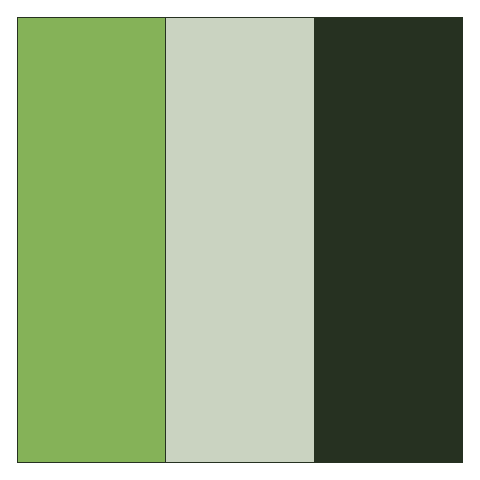
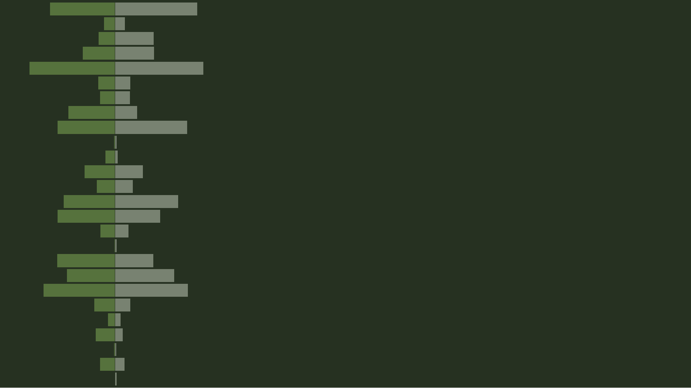
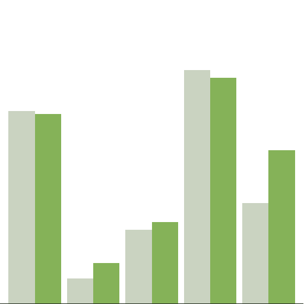

#----------
# Libraries
#----------
library(here)
library(ggplot2)
library(grid)NOTE: This post is about the old blog design. The images are not used on this site.
This post continues the work from the previous one. This code takes the saved data and creates the images. The first two sections set up the rest of the work.
#-------------
# Read in data
#-------------
freqs <- read.csv(here::here("freqs.csv"))
freqs#-------------
# Color Scheme
#-------------
background <- "#263121"
col <- c(
"Overall" = "#85B258",
"Data Science" = "#CAD3C1",
"Background" = background
)
png(filename = here::here("images", "color_scheme.png"))
op <- par(mar = rep(0, 4))
plot(0, 0, pch = NA, axes = F,
xlab = "", ylab = "",
xlim = c(0, 1), ylim = c(0, 1),
asp = 1)
for(i in seq_len(length(col))) {
rect((i / length(col)) - (1 / length(col)), 0, (i / length(col)), 1,
col = col[i], border = background)
}
par(op)
dev.off()The previous section picks the color scheme for the graphics. The colors come from the Calathea theme found here. The color scheme sets a dark green for the background with two lighter greens for the bars.
The next section creates the image for the background. Clicking the hamburger button at the top left of this website will show the graphic.

#-------
# Cover
#-------
# Flip one set of freqs to get back-to-back
freqs[freqs$Source == "Overall", ]$Frequency <-
-freqs[freqs$Source == "Overall", ]$Frequency
# Actual plot
p <- ggplot(freqs, aes(x = rev(Letter), y = Frequency, fill = Source)) +
geom_bar(stat = "identity", color = background, alpha = .5) +
scale_fill_manual(values = col) +
# No guides since just for looks
guides(fill = FALSE) +
# Double y-max limit size so the site's title doesn't block the image
scale_y_continuous(expand = c(0, 0), limits = c(-15, 75), breaks = 0) +
scale_x_discrete(limits = rev(levels(freqs$Letter))) +
coord_flip() +
theme(
panel.background = element_rect(fill = background),
text = element_blank(),
panel.grid.major.y = element_blank(),
panel.grid.minor = element_blank(),
panel.grid.major.x = element_blank(),
title = element_blank())
# How to just get the plot
# http://stackoverflow.com/questions/14313285/ggplot2-theme-with-no-axes-or-grid
gt <- ggplot_gtable(ggplot_build(p))
ge <- subset(gt$layout, name == "panel")
grid.draw(gt[ge$t:ge$b, ge$l:ge$r])
# Cover needs to be 1920 x 1080 according to image used on demo site
png(filename = here::here("images", "cover.png"),
width = 1920, height = 1080)
grid.draw(gt[ge$t:ge$b, ge$l:ge$r])
dev.off()
The right side of the image is left blank because it is not seen. The size comes from the demo site documentation. As a standard Hugo/blogdown site using the Tranquilpeak theme, the cover image is set in the config.toml file as coverImage = "images/website/cover.png".
Finally, the next section creates the icon that appears on the tab on the home page.
#-----------
# Icon
#-----------
# Undo "Flip one set of freqs to get back-to-back"
freqs[freqs$Source == "Overall", ]$Frequency <-
-freqs[freqs$Source == "Overall", ]$Frequency
# reset plot
plot(0, 0,
pch = NA, axes = F,
xlab = "", ylab = "",
xlim = c(0, 1), ylim = c(0, 1))
# Just use "Tyler"
freqs_sub <- freqs[freqs$Letter %in% c("t", "y", "l", "e", "r"), ]
# Get in right order
freqs_sub$Letter <- factor(freqs_sub$Letter,
levels = c("t", "y", "l", "e", "r"))
p <- ggplot(freqs_sub, aes(x = Letter, y = Frequency, fill = Source)) +
geom_bar(position = "dodge", stat = "identity") +
scale_color_manual(values = col) +
scale_fill_manual(values = col) +
geom_hline(yintercept = 0, color = background) +
# No guides since just for looks
guides(fill = FALSE) +
# Double y-max limit size so the site's title doesn't block the image
scale_y_continuous(expand = c(0, 0), limits = c(0, 15), breaks = 0) +
theme(
# transparent background, so it matches any background
panel.background = element_rect(fill = "transparent", color = NA),
text = element_blank(),
panel.grid.major.y = element_blank(),
panel.grid.minor = element_blank(),
panel.grid.major.x = element_blank(),
title = element_blank(),
axis.line.x = element_line(color = background))
# http://stackoverflow.com/questions/14313285/ggplot2-theme-with-no-axes-or-grid
gt <- ggplot_gtable(ggplot_build(p))
ge <- subset(gt$layout, name == "panel")
grid.draw(gt[ge$t:ge$b, ge$l:ge$r])
# Site Icon needs to be 512x512 according to site design
# transparent background, so it matches any background
png(filename = here::here("images", "icon.png"),
width = 512,
height = 512,
bg = "transparent")
grid.draw(gt[ge$t:ge$b, ge$l:ge$r])
dev.off()
The background is transparent so that it doesn’t appear out of place when moved. The bars come from the same data as the background but only using the letters of my name. The config.toml setting is favicon = "images/website/icon.png". The source code file resides here.